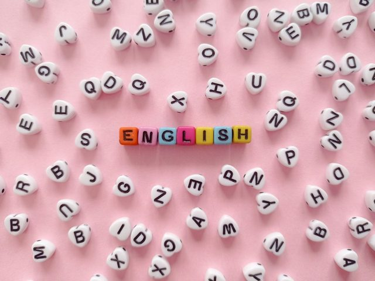

VOCABULARY · 主題 2000 字 UNIT 21
Languages．語言
兩個最常用的語言：Chinese 和 English。語言當名詞時不可數、前面不加 a；Chinese 還可以當「中國人」和「中國的」。
共 2 個單字．點 🔊 聽發音
1Chinesen./adj.
中文；中國人；中國的
語言不可數；中國人單複數同形（two Chinese）
My English teacher can speak a little Chinese.我的英文老師會說一點中文。

2Englishn./adj.
英文；英語；英國的
語言不可數，前面不加 a
English is spoken in many countries.很多國家都說英語。
FOCUS
Chinese、English 的三種用法
| 用法 | 例句 | 中文 |
|---|
| 語言（名詞，不可數） | We have Chinese class every day. | 我們每天都有國文課。 |
| 語言（名詞，不可數） | Can you write your name in English? | 你會用英文寫你的名字嗎？ |
| 人（名詞） | Many Chinese live in Malaysia. | 很多華人住在馬來西亞。 |
| …的（形容詞） | Dumplings are a kind of Chinese food. | 餃子是一種中國食物。 |
| …的（形容詞） | I read an English storybook last night. | 我昨晚讀了一本英文故事書。 |
說語言不加 a／the：speak English（不是 speak an English）。in English＝用英文。
FOCUS
說語言的常用句
| 英文 | 中文 |
|---|
| Do you speak English? | 你會說英文嗎？ |
| How do you say 「謝謝」 in English? | 「謝謝」用英文怎麼說？ |
| What does this word mean in Chinese? | 這個字的中文是什麼意思？ |
| Please say it again in English. | 請再用英文說一次。 |
| Chinese is hard to write, but it's fun. | 中文很難寫，但很有趣。 |
「用某種語言」說用 in：in English、in Chinese。
FOCUS
國家、人、語言（和 Unit 20 一起記）
| 國家 | 人 | 語言 |
|---|
| China | Chinese | Chinese |
| England 英格蘭 | English（英格蘭人；常說 the English） | English |
| America | American | English |
| Japan | Japanese | Japanese |
語言、國籍的字第一個字母都要大寫：English、Chinese。